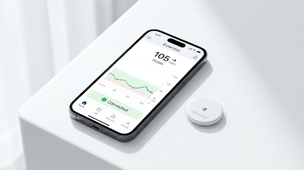

Um agente que entende diabetes
Baseado nas diretrizes ADA, SBD e EASD. Recebe o seu contexto clínico — perfil, faixa alvo, últimas medições — e responde em linguagem de gente. Nunca prescreve, nunca diagnostica, nunca calcula dose.
Registre glicemia, refeição e exame em segundos. Um agente de inteligência artificial especializado explica o que está acontecendo — em português, sem jargão e sem culpa.
Gratuito no lançamento · Quem chega no começo é Fundador para sempre

Fonte: IDF Diabetes Atlas, 11ª edição (2025), e dados da Federação Internacional de Diabetes sobre gasto em saúde.
O produto
A maioria dos aplicativos de diabetes é planilha com outro nome: registra e devolve número. O Essentius fecha o ciclo — registra, explica e sustenta a motivação.
Baseado nas diretrizes ADA, SBD e EASD. Recebe o seu contexto clínico — perfil, faixa alvo, últimas medições — e responde em linguagem de gente. Nunca prescreve, nunca diagnostica, nunca calcula dose.
Uma espécie própria, criada para o Essentius e registrável como propriedade intelectual. Ele ganha energia quando você se cuida. Gamificação com regra rígida: recompensa o registro, nunca o resultado.
Rede privada com moderação e mentoria de quem convive com diabetes há anos. Porque a parte mais dura raramente é técnica — é não se sentir sozinho às três da manhã.
Sem atrito
O motivo número um para largar um app de diabetes é o trabalho de alimentá-lo. Por isso a meta de projeto é dois toques por registro — e a refeição você resolve com uma foto, com a confiança da estimativa sempre visível para você decidir se aceita.


O dado já existe
Sensor de glicemia gera centenas de leituras por semana. Exame de sangue vira um arquivo cheio de siglas. O trabalho do Essentius não é pedir que você digite tudo de novo — é ler o que já existe e transformar em conversa.
O princípio inegociável
“Quanto mais você cuida da sua saúde,
mais o Essentius cuida de você.”
O Essentius recompensa o cuidado, nunca o resultado clínico. Você ganha por ter medido — não por ter medido “bem”. Premiar resultado seria premiar quem teve um dia bom e punir quem está numa fase difícil, que é exatamente quem mais precisa continuar registrando. Nenhuma tela deste produto diz “ruim”. Diz “acima do alvo”, que é fato, não veredito.
Não é apresentação, é software rodando
O Essentius está em pré-lançamento — ainda sem base de usuários. Mas a plataforma não é protótipo: a API está em produção, com HTTPS, backup diário e verificação automatizada de ponta a ponta.
Mercado e modelo
Diabetes não tem alta. É uma condição que exige decisão várias vezes ao dia, todos os dias, pelo resto da vida — e a maior parte dessas decisões acontece longe do consultório, sem nenhum apoio.
Lançamento gratuito para formar base e aprender com uso real. Depois, assinatura de preço baixo — a tese é volume, não margem por usuário. Fundadores mantêm a condição vitalícia.
Catálogo de parceiros que o usuário alcança com EssCoins. A moeda não é comprável com dinheiro — o parceiro paga pelo cliente qualificado que chega, não o usuário pela vantagem.
Cada registro melhora o contexto que o agente recebe. Quanto mais tempo a pessoa usa, mais difícil trocar — e o Essi, como propriedade intelectual própria, não se copia num fim de semana.
Onde estamos
API em produção com autenticação, registro de saúde, EssCoins, chat com o agente e consentimento LGPD. Aplicativo Android compilado e site publicado.
Revisão jurídica dos documentos, backup fora do servidor, exportação e exclusão de dados, e o Essi ganhando corpo com animação.
Publicação na Play Store e App Store, integração com sensores de glicemia contínua e leitura automática de exames.
Rede privada com mentoria, e a avaliação formal de ANVISA para as funcionalidades que exigirem enquadramento como dispositivo médico.
Para investidores
O Essentius é uma iniciativa da Agile Solution, que desenvolve e opera sistemas de missão crítica para empresas brasileiras — ERP, integrações industriais, automação e plataformas SaaS em produção.
Não é um projeto de fim de semana procurando dinheiro para começar. É uma plataforma que já roda, construída com a disciplina de quem sustenta software em produção, buscando capital para acelerar distribuição e time.
Problema: 16,6 milhões de brasileiros gerenciam uma condição crônica sozinhos, entre uma consulta e outra.
Produto: o companheiro diário — registro sem atrito, um agente de IA que explica, e gamificação que sustenta o hábito.
Diferencial: recompensa o cuidado e não o resultado; mascote proprietário; guardrails clínicos no código, não no marketing.
Estágio: pré-lançamento, plataforma em produção, sem base de usuários ainda.
O Essentius entra no ar gratuito. Quem chega no começo entra como Fundador e mantém a condição para sempre.